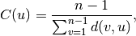
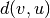
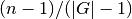

closeness_centrality¶
- closeness_centrality(G, u=None, distance=None, normalized=True)¶
Compute closeness centrality for nodes.
Closeness centrality [R160] of a node
 is the reciprocal of the
sum of the shortest path distances from to all
is the reciprocal of the
sum of the shortest path distances from to all  other nodes.
Since the sum of distances depends on the number of nodes in the
graph, closeness is normalized by the sum of minimum possible
distances .
other nodes.
Since the sum of distances depends on the number of nodes in the
graph, closeness is normalized by the sum of minimum possible
distances .
where  is the shortest-path distance between
 and ,
and
and ,
and  is the number of nodes in the graph.
is the number of nodes in the graph.Notice that higher values of closeness indicate higher centrality.
Parameters : G : graph
A NetworkX graph
u : node, optional
Return only the value for node u
distance : edge attribute key, optional (default=None)
Use the specified edge attribute as the edge distance in shortest path calculations
normalized : bool, optional
If True (default) normalize by the number of nodes in the connected part of the graph.
Returns : nodes : dictionary
Dictionary of nodes with closeness centrality as the value.
Notes
The closeness centrality is normalized to  where
is the number of nodes in the connected part of graph
containing the node. If the graph is not completely connected,
this algorithm computes the closeness centrality for each
connected part separately.If the ‘distance’ keyword is set to an edge attribute key then the shortest-path length will be computed using Dijkstra’s algorithm with that edge attribute as the edge weight.
References
[R160] (1, 2) Freeman, L.C., 1979. Centrality in networks: I. Conceptual clarification. Social Networks 1, 215–239. http://www.soc.ucsb.edu/faculty/friedkin/Syllabi/Soc146/Freeman78.PDF